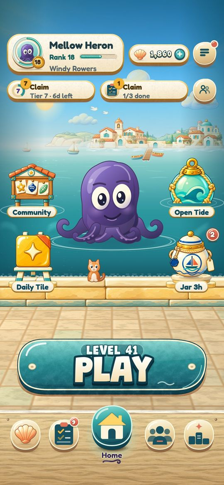
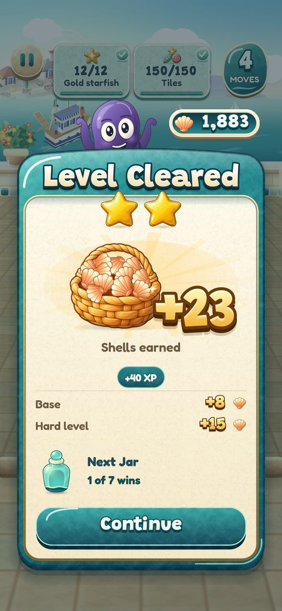
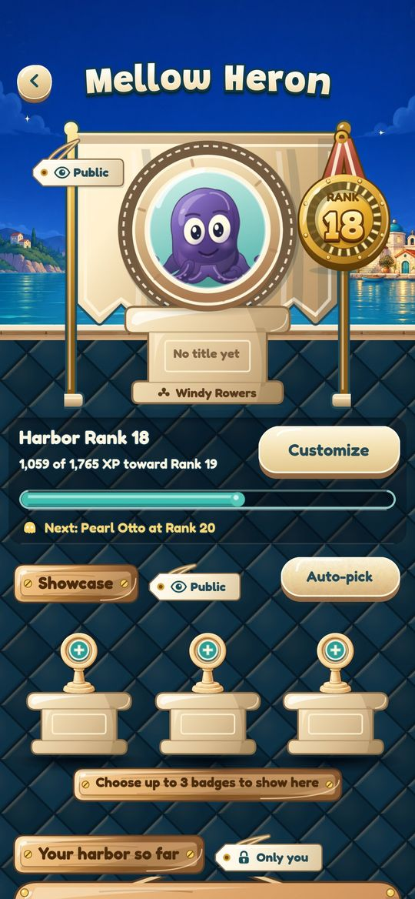

Turnstone
by Jarvis Studios
Coming to iOS and Android
Turnstone is a cozy tile puzzle set in a sunny harbor town, starring Otto the octopus. It is turn-based and made for one thumb: tap a tile to flip the path between two matching Twins, and three or more matching tiles clear. Take your time. There are no timers, no lives and no energy, so you never have to wait or pay to keep playing.
Play the campaign through the harbor, try the Daily puzzle that is the same for everyone and is played without Tools, and build your own levels in the level maker.
Good to know
- One thumb, taps onlyPortrait, turn-based, no timers.
- No lives, no energyYou never have to wait, or pay, to keep playing.
- Plays offlineThis version keeps your progress on your device and needs no account.
- No ads, nothing for saleThis version shows no ads and sells nothing for real money.
- Fair DailyNothing you can buy is ever usable in the ranked Daily puzzle, and stars are never sold.
- For all agesPlayers under 13 pick their name from a list instead of typing one.
Screenshots

Home A level 
Level cleared A Harbor Jar 
Profile
Screenshots from a test build. Names and numbers are examples made up by the game.